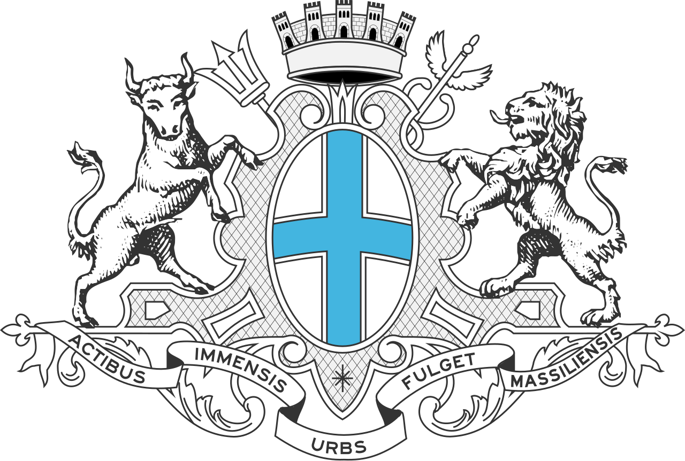

Bienvenue sur mon espace
Michel Gomez
Étudiant BTS SIO Option SISR
Architecte Réseaux en devenir & Passionné de Cybersécurité.
Parcours Personnel
Après 5 ans d'expérience en tant que technicien informatique itinérant dans la magnifique région PACA, j'ai pris la décision stratégique de reprendre mes études.
Mon objectif ? Consolider mes acquis de terrain, acquérir un diplôme d'État et me spécialiser dans mon domaine de prédilection : la Cyber-sécurité.
Je m'entraîne quotidiennement pour devenir Pen-tester (testeur d'intrusion), alliant ma connaissance des infrastructures physiques à l'art de la défense numérique.
Mairie de Marseille

J'évolue au sein de la DSI de la ville de Marseille, au cœur d'une infrastructure réseau d'envergure où chaque seconde compte pour servir plus de 800 000 habitants. Au quotidien, cela représente le défi d'assurer la continuité de service pour 18 000 agents et de garantir le bon fonctionnement de sites essentiels : l'Hôtel de Ville regroupant l'ensemble des élus, 470 écoles, 110 CMA, 60 crèches, et bien d'autres services encore.
Ma Journée Type
Exemples d'interventions terrain
-
Configuration et installation de badgeuses

- Création de lignes téléphoniques depuis l'outil Mitel
- Diagnostic de pannes réseau
- Brassage de prises réseau
- Configuration et installation de routeur et switches (Cisco)
- Remise au propre de baies de brassage
Projets & Labs
Home Lab Physique
Maquettage et déploiement d'une infrastructure dédiée avec switch, routeur et borne Wi-Fi.
Infra Proxmox
Déploiement d'une infrastructure de virtualisation robuste pour l'hébergement de services et de labs de test.
Evil Twins
Simulation d'attaques Wi-Fi avec capture de handshakes pour l'étude des vulnérabilités WPA/WPA2.
Serveur Plex Local
Gestion et maintenance d'un serveur multimédia local optimisé pour le streaming haute fidélité.